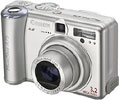

Forside
Introduktion
Valg af
Anvendelse
Motiver

Digitalkameraer
Der er endnu en del forskelle på normale og digitale kameraer; både fordele og ulemper. Hvor digitalkameraer har en række avancerede indstillingsmuligheder, som ikke er tilgængelige på konventionelle kamereaer, er de desværre stadig bagud på en række af de punkter, der er en selvfølge for normale kameraer.
Fordele
- Mulighed for at slette dårlige billeder med det samme.
- Avancerede belysnings-/filtermuligheder.
- Nem efterbehandling/-redigering af billeder.
Ulemper
- Digitalkameraer med høj opløsning stadig meget dyre.
- Kameraer med udskiftelige objektiver ligeledes dyre.
Indstillinger
På digitalkameraer kan man normalt indstille en række avancerede filtre og optagemuligheder. Blandt disse vil man ofte støde på bl.a. ISO, hvidblænde, kompensation for røde øjne m.fl. De to indstillinger vi kommer til at berøre mest i denne præsentation, er opløsning og kvalitet, da disse kontrollerer den størrelse som billederne gemmes i.
Da digitalkameraer benytter hukommelseskort til at lagre billeder på, er det muligt at få plads til flere billeder ved at gemme billederne i forskellig opløsning og kvalitet alt efter hvad man ønsker at bruge dem til.
Opløsning
På langt de fleste digitalkameraer kan man ændre den opløsning, som billedet tages i. På et kamera på 3,2 Megapixel, er den maksimale opløsning f.eks. 2048x1536, men det er muligt at tage billeder i en lavere opløsning end dette for at spare plads. 1600x1200 er f.eks. fint til at printe billeder i postkort-størrelse, og har man kun brug for at se dem på computeren, vil man ofte kunne gå helt ned til 1024x768 og endda 800x600 uden problemer.
Kvalitet
Et sted man også kan spare plads, er ved at benytte en lavere kvalitet. På de fleste kameraer er denne indstilling angivet som super god, god, middel og lav. Her er det igen klogt at overveje hvad man skal bruge billedet til. Er det til brug på en computer er det ofte nok at bruge middel, og til hjemmesider måske endda lav.
« Tilbage | Næste: valg af opløsning »
Termer brugt på denne side:ISOHvidblænde Megapixel |
Til top |